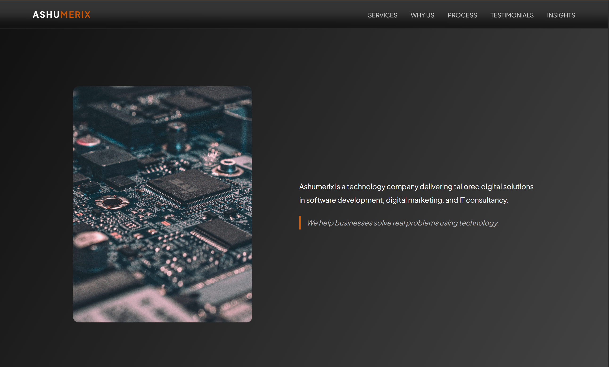
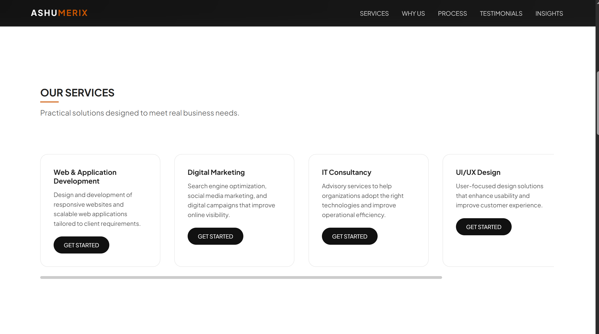
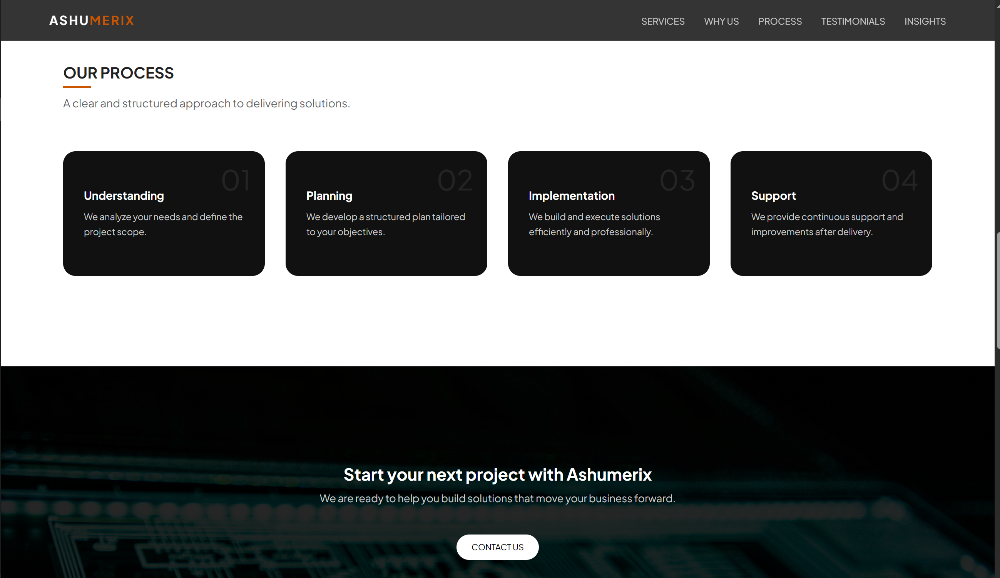

Building a responsive and scalable company website
Ashumerix is a company website project focused on translating business identity into a clean, functional, and scalable digital presence.
Unlike concept-driven projects, this was rooted in working within constraints — including fixed content, defined branding direction, and the need for a responsive, production-ready interface.
The goal was not just to design something visually appealing, but to create a system that could hold up in real-world use and future updates.

Many company websites suffer from:
In this case, an additional constraint was critical:
The content itself could not be altered.
This introduced a real-world challenge:
how do you improve clarity and usability without changing what is being said?
To design and build a company website that:
This project required thinking beyond the user alone and considering:
Key considerations:
Before designing, I studied the content in its existing form.
This allowed me to:
I focused on building a layout system that:
This was less about adding elements, and more about organizing what already exists.
Responsiveness was handled through:
The goal was to ensure:
A key challenge was ensuring that replacing images in the future would not break the design.
To solve this, I:
Visual decisions focused on:
The aim was clarity over decoration.
Content-first design
Instead of redesigning content, I structured it to improve clarity.
Constraint-driven design
Worked within fixed text and branding instead of altering them.
Stability over flexibility
Ensured the layout remains intact even when content changes.
Manual responsiveness
Handled responsiveness intentionally rather than relying on frameworks.
The result is a fully responsive, structured company website that:
This project strengthened my ability to:
It reinforced an important principle:
good design is not just how something looks, but how well it holds up over time


These screens reflect the final interface and overall user experience across key sections of the platform.